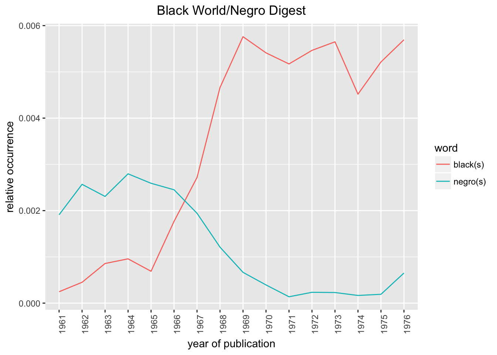
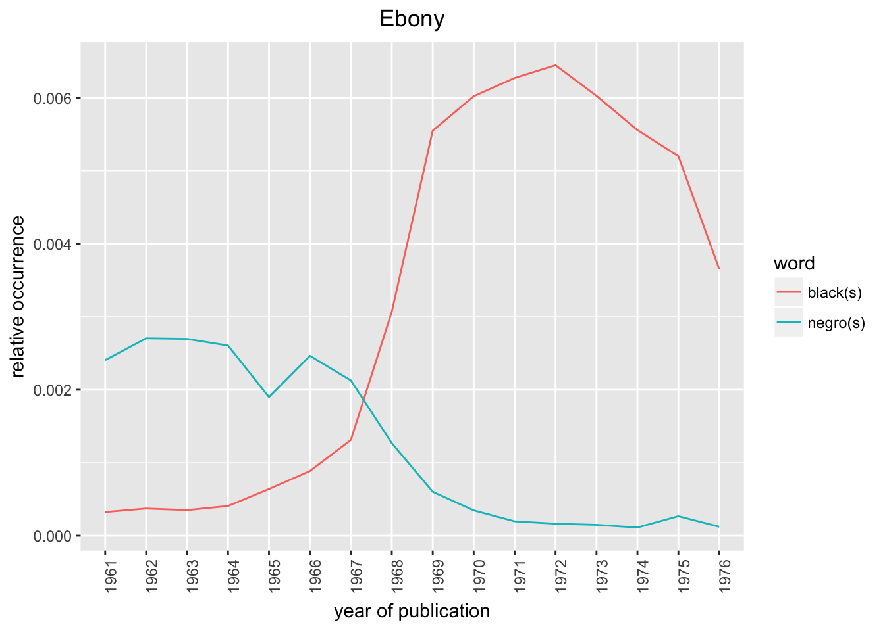
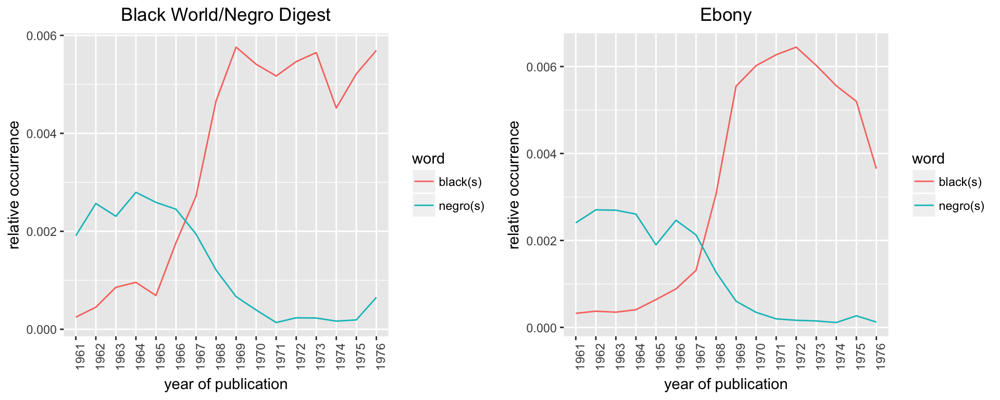

In this second chapter of the tutorial, we use the yearly aggregated text files, pooled.txt, created for each year of publication of the magazines of interest - Black World/ Negro Digest and Ebony.
The 1960-1970s era saw the word negro(es) gradually falling out of favor and the word black(s) becoming a more commonly used identity term.
library(wordVectors)
library(gridExtra)
library(ggplot2)
library(scales)dirs <- c("../BL_ND/BL_ND_1961/",
"../BL_ND/BL_ND_1962/",
"../BL_ND/BL_ND_1963/",
"../BL_ND/BL_ND_1964/",
"../BL_ND/BL_ND_1965/",
"../BL_ND/BL_ND_1966/",
"../BL_ND/BL_ND_1967/",
"../BL_ND/BL_ND_1968/",
"../BL_ND/BL_ND_1969/",
"../BL_ND/BL_ND_1970/",
"../BL_ND/BL_ND_1971/",
"../BL_ND/BL_ND_1972/",
"../BL_ND/BL_ND_1973/",
"../BL_ND/BL_ND_1974/",
"../BL_ND/BL_ND_1975/",
"../BL_ND/BL_ND_1976/")
all_names <- c()
for(m in 1:length(dirs)){
sentences<-scan(paste0(dirs[m], "pooled.txt"),"character",sep="\n");
#Replace full stop and comma
sentences<-gsub("\\.","",sentences)
sentences<-gsub("\\,","",sentences)
#Split sentence
words<-strsplit(sentences," ")
#Calculate word frequencies
words.freq<-table(unlist(words));
all_names <- union(all_names , names(words.freq))
}tab <- matrix(0, length(dirs), length(all_names))
colnames(tab) <- all_names
rownames(tab) <- c(paste0("ND/BW_", 1961:1976))
for(m in 1:length(dirs)){
sentences<-scan(paste0(dirs[m], "pooled.txt"),"character",sep="\n");
#Replace full stop and comma
sentences<-gsub("\\.","",sentences)
sentences<-gsub("\\,","",sentences)
#Split sentence
words<-strsplit(sentences," ")
#Calculate word frequencies
words.freq<-table(unlist(words));
tab[m, match(names(words.freq), colnames(tab))] <- as.numeric(words.freq)
}
tab[1:5, 1:5]Save the output
save(tab, file = "../output/Document_Term_Matrix_BW_ND.rda")
save(all_names, file = "../output/all_words_BW_ND.rda")Load the document term matrix and plot the trends of the words negro and blacks
bl_nd_data <- get(load( "../output/Document_Term_Matrix_BW_ND.rda"))
bl_nd_data_norm <- t(apply(bl_nd_data, 1, function(x) return(x/sum(x))))
black_counts_norm <- apply(bl_nd_data_norm[, c("black", "blacks")], 1, mean)
negro_counts_norm <- apply(bl_nd_data_norm[, c("negro", "negros", "negroes")], 1, mean)
afroamerican_counts_norm <- apply(bl_nd_data_norm[, c("afroamerican", "africanamerican")], 1, mean)charts.data <- data.frame("word" = c(rep("black(s)", 16),
rep("negro(s)", 16)),
"year" = factor(c(1961:1976,
1961:1976),
levels = 1961:1976),
"prop" = c(black_counts_norm,
negro_counts_norm))
p1 <- ggplot() + geom_line(aes(y = prop, x = year, colour = word, group=word),
data = charts.data, stat="identity") +
theme(axis.text.x=element_text(angle=90, hjust=1)) + xlab("year of publication") +
ylab("relative occurrence") + ggtitle("Black World/Negro Digest") +
theme(plot.title = element_text(hjust = 0.5))
p1
dirs <- c("../Ebony/1961/",
"../Ebony/1962/",
"../Ebony/1963/",
"../Ebony/1964/",
"../Ebony/1965/",
"../Ebony/1966/",
"../Ebony/1967/",
"../Ebony/1968/",
"../Ebony/1969/",
"../Ebony/1970/",
"../Ebony/1971/",
"../Ebony/1972/",
"../Ebony/1973/",
"../Ebony/1974/",
"../Ebony/1975/",
"../Ebony/1976/")
all_names <- c()
for(m in 1:length(dirs)){
sentences<-scan(paste0(dirs[m], "pooled.txt"),"character",sep="\n");
#Replace full stop and comma
sentences<-gsub("\\.","",sentences)
sentences<-gsub("\\,","",sentences)
#Split sentence
words<-strsplit(sentences," ")
#Calculate word frequencies
words.freq<-table(unlist(words));
all_names <- union(all_names , names(words.freq))
}tab <- matrix(0, length(dirs), length(all_names))
colnames(tab) <- all_names
rownames(tab) <- c(paste0("Ebony_", 1961:1976))
for(m in 1:length(dirs)){
sentences<-scan(paste0(dirs[m], "pooled.txt"),"character",sep="\n");
#Replace full stop and comma
sentences<-gsub("\\.","",sentences)
sentences<-gsub("\\,","",sentences)
#Split sentence
words<-strsplit(sentences," ")
#Calculate word frequencies
words.freq<-table(unlist(words));
tab[m, match(names(words.freq), colnames(tab))] <- as.numeric(words.freq)
}
tab[1:5, 1:5]Save the output
save(tab, file = "../output/Document_Term_Matrix_Ebony.rda")
save(all_names, file = "../output/all_words_Ebony.rda")Load the document term matrix and plot the trends of the words negro and blacks
bl_nd_data <- get(load( "../output/Document_Term_Matrix_Ebony.rda"))
bl_nd_data_norm <- t(apply(bl_nd_data, 1, function(x) return(x/sum(x))))
black_counts_norm <- apply(bl_nd_data_norm[, c("black", "blacks")], 1, mean)
negro_counts_norm <- apply(bl_nd_data_norm[, c("negro", "negros", "negroes")], 1, mean)
afroamerican_counts_norm <- apply(bl_nd_data_norm[, c("afroamerican", "africanamerican")], 1, mean)charts.data <- data.frame("word" = c(rep("black(s)", 16),
rep("negro(s)", 16)),
"year" = factor(c(1961:1976,
1961:1976),
levels = 1961:1976),
"prop" = c(black_counts_norm,
negro_counts_norm))
p2 <- ggplot() + geom_line(aes(y = prop, x = year, colour = word, group=word),
data = charts.data, stat="identity") +
theme(axis.text.x=element_text(angle=90, hjust=1)) + xlab("year of publication") +
ylab("relative occurrence") + ggtitle("Ebony") +
theme(plot.title = element_text(hjust = 0.5))
p2
grid.arrange(p1,p2, nrow = 1, ncol = 2, as.table = FALSE) 
sessionInfo()## R version 3.5.0 (2018-04-23)
## Platform: x86_64-apple-darwin15.6.0 (64-bit)
## Running under: macOS Sierra 10.12.6
##
## Matrix products: default
## BLAS: /Library/Frameworks/R.framework/Versions/3.5/Resources/lib/libRblas.0.dylib
## LAPACK: /Library/Frameworks/R.framework/Versions/3.5/Resources/lib/libRlapack.dylib
##
## locale:
## [1] en_US.UTF-8/en_US.UTF-8/en_US.UTF-8/C/en_US.UTF-8/en_US.UTF-8
##
## attached base packages:
## [1] stats graphics grDevices utils datasets methods base
##
## other attached packages:
## [1] scales_0.5.0 ggplot2_2.2.1 gridExtra_2.3 wordVectors_2.0
##
## loaded via a namespace (and not attached):
## [1] Rcpp_0.12.17 knitr_1.20 magrittr_1.5 munsell_0.4.3
## [5] colorspace_1.3-2 rlang_0.2.0 stringr_1.3.1 plyr_1.8.4
## [9] tools_3.5.0 grid_3.5.0 gtable_0.2.0 htmltools_0.3.6
## [13] yaml_2.1.19 lazyeval_0.2.1 rprojroot_1.3-2 digest_0.6.15
## [17] tibble_1.4.2 evaluate_0.10.1 rmarkdown_1.9 labeling_0.3
## [21] stringi_1.2.2 compiler_3.5.0 pillar_1.2.2 backports_1.1.2This R Markdown site was created with workflowr